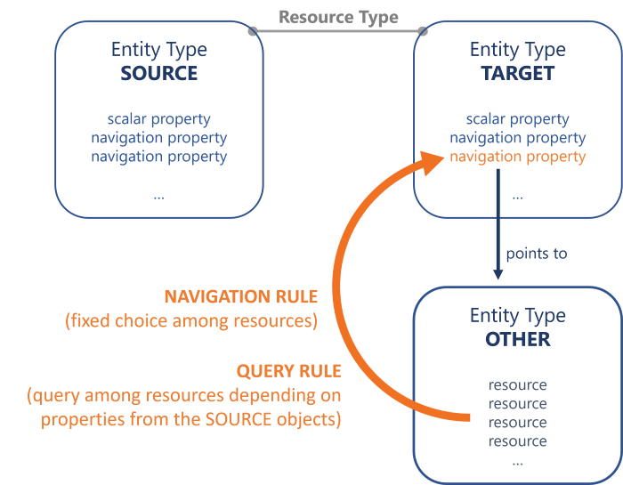
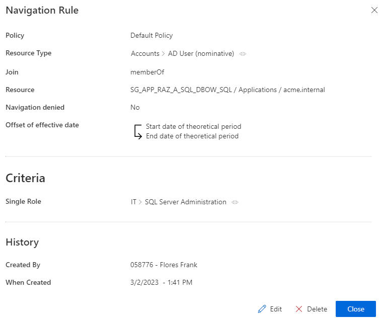
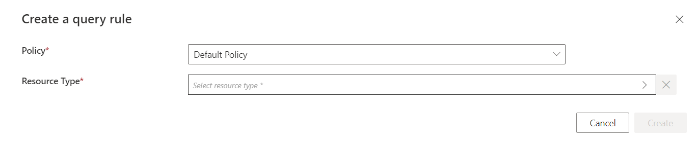
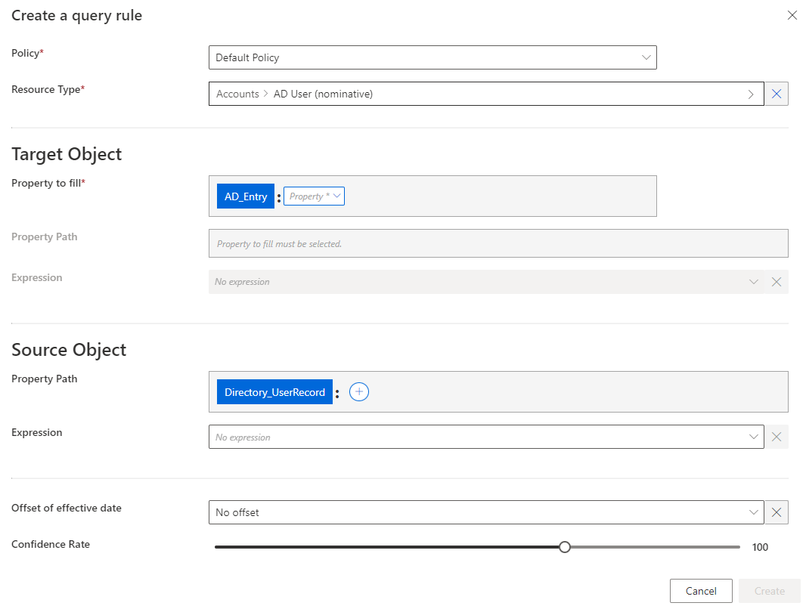
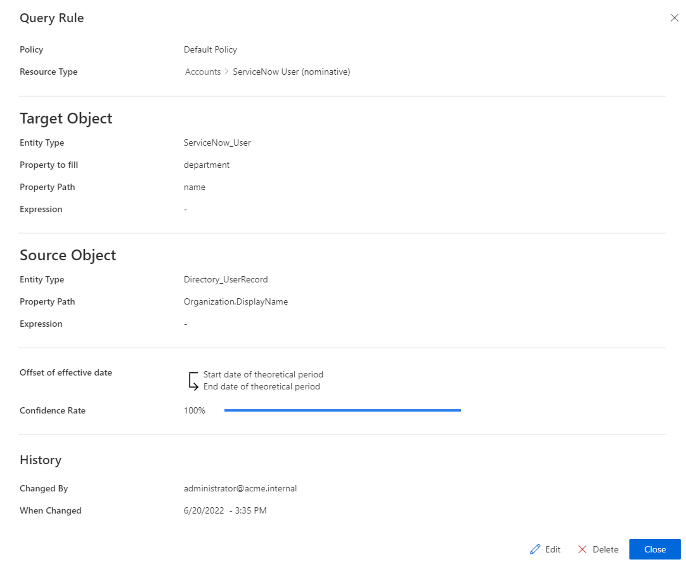
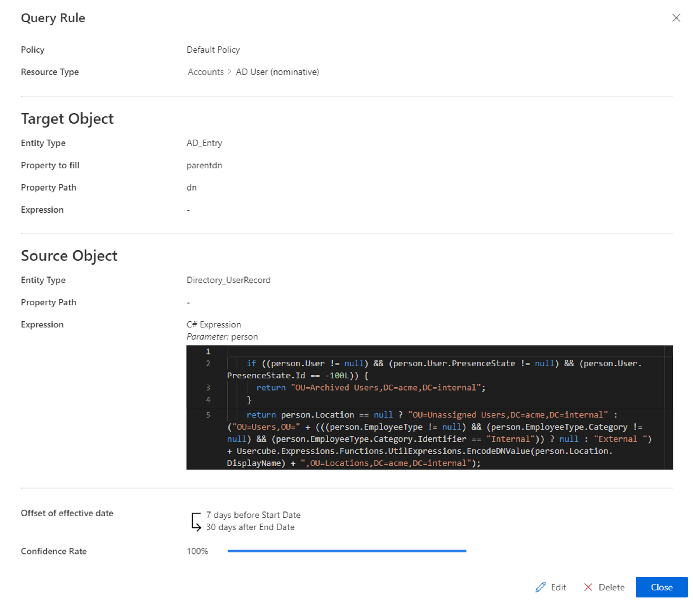

Compute a Navigation Property
How to define navigation rules and/or query rules to compute and provision the values of navigation properties for target resources based on source resources. See the Resource Type topic for additional information.
Overview
Sources are usually identities, and targets are usually accounts from the managed systems.
Here, we are going to compute the values of navigation properties for the target resources used in entitlement management, based on source resources. See the Define Navigation Properties topic for additional information. We are going to provision these properties, i.e. write them to the managed system. See the Provision topic for additional information.
The right tools for the job are navigation and query rules.
A navigation property's value can be computed by a navigation rule or a query rule, assigning a given resource from the entity type pointed by the navigation property (which can be the target entity type itself). Let's call this entity type the "other" one.
- A Navigation rule assigns a fixed resource, which is chosen from among the "other" entity type's resources during the rule's creation. The assigned resource is the same for all impacted accounts. Use a navigation rule when a given resource must be assigned, regardless of users' attributes.
- A Query rule assigns a resource from the "other" entity type too. However, the resource is chosen according to a query via a C# expression with conditions, based on the attributes of the source objects (usually users). Hence, contrary to a navigation rule, a query rule can assign a different resource for each impacted account, based on the attributes of the account's owner. Use a query rule when there is the need to use variables from among users' attributes to select the resource to assign.

A navigation rule could add the AD group
SG_APP_SQLto thememberOfnavigation property to all AD nominative accounts provided that the user has the single roleSQL Server Administration.
A query rule could compute the value of the
departmentnavigation property for ServiceNow nominative accounts (entity typeServiceNow_User), with a query from among resources from theServiceNow_Departmententity type, where the name of the resource would match the display name of the organization specified for the user (owner of the ServiceNow account).We need here to query the
ServiceNow_Departmententity type in order to find the right department to update the value ofdepartment, which is specific to each ServiceNow account.Thus, each user owning a ServiceNow account will see the value of
departmentin their account updated with the resource fromServiceNow_Departmentwhich corresponds to the department specified for this user.
Another query rule could compute the
parentdnattribute for AD nominative accounts, with a query from among AD entries, where thednattribute of the resource would match a complex expression based on the user's (owner of the AD account) presence state, employee type, location, etc.We need here to query the
AD - Entryentity type in order to find the right dn to update the value ofparentdn, which is specific to each AD nominative account.Thus, each AD nominative account will have the value of its
parentdnset according to its owner's attributes (presence state, employee type, location, etc.).
The application of a navigation rule can depend on the assignment of a single role, and/or user dimensions. See the Create Roles in the Role Catalog topic for additional information on the assignment of a single role and Conforming Assignments topic for additional information on dimensions.
A query rule does not use criteria as it is designed to compute a given navigation property for all existing resources in a given resource type. However, in case of several query rules on a same property, the application of a query rule depends on its confidence rate and the corresponding priority it receives compared to other query rules. See the Classify Resources topic for additional information.
While both navigation and query rules compute navigation properties, the value of one navigation property should be computed by either navigation or query rules, not both.
In Identity Manager, a navigation property has two "sides", one for each linked element.
For example in the AD, the group membership of a user is represented by the properties member for groups (containing a list of users) and memberOf for users (containing a list of groups).
However, some managed systems only have one of these two sides.
The AD only uses member from among groups' properties. Users do not have a memberOf property. As Identity Manager uses and links both sides, it is able to "translate" the information, so that the corresponding navigation property, which actually exists in the managed system, is modified by the navigation/query rule.
Identity Manager assigns an entitlement to a user by assigning a group-membership to an account. Thus we can create a navigation rule which adds a group to the memberOf property of given accounts. Identity Manager will update the member property of groups accordingly (in Identity Manager), and then provision the member property of said groups in the AD, adding the impacted accounts.
A navigation rule will trigger the creation of a target resource for all impacted source resources (so all users), which are not yet correlated with a resource of this resource type.
NOTE: A query rule does not create resources, and only computes the navigation properties of existing resources.
Guidelines
Follow these guidelines when configuring navigation properties.
Expression code must not contain too much data
Once configured, a rule is a complicated object to modify. Therefore, you must keep business data in the resource and out of the expression. It is easier to change data than to change a rule.
For example, consider an organization that manages email addresses according to the site with
.frfor France and.befor Belgium.A working option could be to write an expression with a condition
ifon the site to assign the domain name. However, if the organization expands and needs to consider an additional country, then the rule requires change in the expression code.A better solution is to change the identity data model by adding a field
Domain Nameto describe the objectSite, and to be used in the rule expression. In this case, if there is an additional country, then a new field is added in the data model forSiteandDomain Name. Thus, the rule expression remains simple by using the new objects, for exampleEmail = FirstName + "." + LastName + "@" + Company + "." + DomainName.
Priority between navigation/query rules
When creating navigation and query priorities, follow these rules:
- Several rules computing the same property with different criteria should not coexist;
- The only reason to have several rules to compute a single property is when changing the property value over time, via time offsets. See the Resource Type topic for additional information.
Participants and Artifacts
For a given managed system, integrators may need the help of the application owner who knows the application users, entitlements and data model. See the Categorize Resources topic for additional information.
|
Input |
Output |
|---|---|
|
Categorization (required) |
Navigation rules |
Create a Navigation Rule
Fill an entity type with a navigation rule by proceeding as follows:
Step 1 – Click on Access Rules on the home page in the Configuration section.

Step 2 – In the dropdown menu at the top left, choose the source entity type for the future navigation rule.

Step 3 – Click on the Navigations tab and on the addition button at the top right corner.

Step 4 – Fill in the fields.

-
Join: navigation property from the target entity type, whose value is to be impacted. -
Resource: resource from the entity type pointed by theJoin, which is to be added to theJoinproperty. -
Navigation denied: option that forbids the resource assignment. -
Offset of effective date: time period that defines the actual effective date for property computation according to the value's start and/or end date.For example, account activation and deactivation can be managed according to the start and/or end dates.
-
Criteria: conditions that, if met, trigger the rule application.
Our example would look like:

Step 5 – Click on Create and see a line added on the rules page.
The navigation rule is now configured and can be found in the Access Rules tab.
Create a Query Rule
Fill an entity type with a query rule by proceeding as follows:
Step 1 – Click on Access Rules on the home page in the Configuration section.
Step 2 – In the dropdown menu at the top left, choose the source entity type for the future query rule.
Step 3 – Click on the Queries tab and on the addition button at the top right corner.
Fill in the fields.

Once the Resource Type is provided, more fields appear.

- Target Object >
Property to fill: navigation property from the target entity type, whose value is to be impacted. - Target Object: property (or expression of properties) from the entity type pointed by the
Property to fill, which will be the value of theProperty to fillif it matches the source object. Can be defined by a property path and/or an expression. See the Expressions topic for additional information. - Source Object: property (or expression of properties) from the source entity type. Can be defined by a property path and/or an expression. See the Expressions topic for additional information.
Offset of effective date: time period that defines the actual effective date according to the value's start and/or end date. An offset of effective date can be useful for some attributes. For example, account activation and deactivation can be managed according to the start and/or end dates.Confidence Rate: rate expressing the confidence in this link, and its priority order. See the Classify Resources topic for additional information.
Our examples would look like:


Click on Create and see a line added on the rules page.
Impact of Modifications
Any modification in a navigation or query rule is taken into account when launching the role model computation task, in the Resource Types frame of the corresponding connector's overview page, via Jobs > Compute Role Model.

This task applies the rules and computes new properties. Therefore, if a given rule's criterion is modified, then all corresponding assignments are computed again. If a resource was created automatically for an identity through a navigation rule (and its criteria), and if the user's criteria do not comply with the new version of the rule, then the corresponding resource is automatically deleted.
A modification in a provisioning rule can trigger the removal of a resource only on the Identity Manager side. There are several barriers to cross before said resource is removed from the managed system.
Simulations are available in order to anticipate the changes induced by a creation/modification/deletion in navigation and query rules. See the Perform a Simulation topic for additional information.
Verify Rule Creation
In order to verify the process:
Step 1 – On the corresponding connector's overview page, in the Resource Types frame click on Jobs > Compute Role Model to apply all rules.
Review unauthorized accounts (on the Resource Reconciliation screen) and roles (on the Role Reconciliation screen) to help check query rules: if there are numerous properties to be reconciled following the same pattern, then there may be a rule that needs to be changed.
Step 2 – On the corresponding connector's overview page, in the Resource Types frame click on Jobs > Compute Role Model to apply all rules.
Step 3 – Review unauthorized accounts (on the Resource Reconciliation screen) and roles (on the Role Reconciliation screen) to help check query rules: if there are numerous properties to be reconciled following the same pattern, then there may be a rule that needs to be changed.
See the Review an Unauthorized Account and the Reconcile a Role topics for additional information.